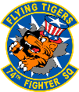
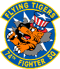
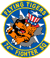

A-10C Currencies Checker
 


A-10C Currencies Checker

Ask your unit's SARM/1C0s to pull an ITS for all the unit's pilots in .pdf format from ARMS. Open the .pdf and "save as" XML. This "ITS.XML" file is what you should be uploading here.